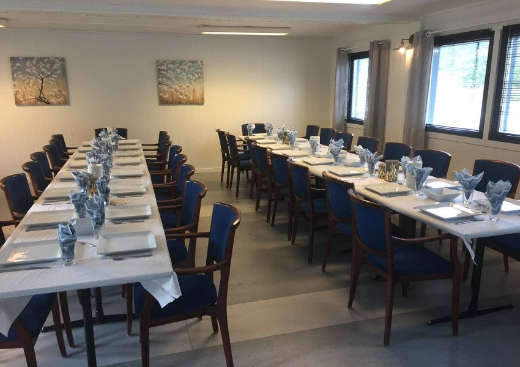
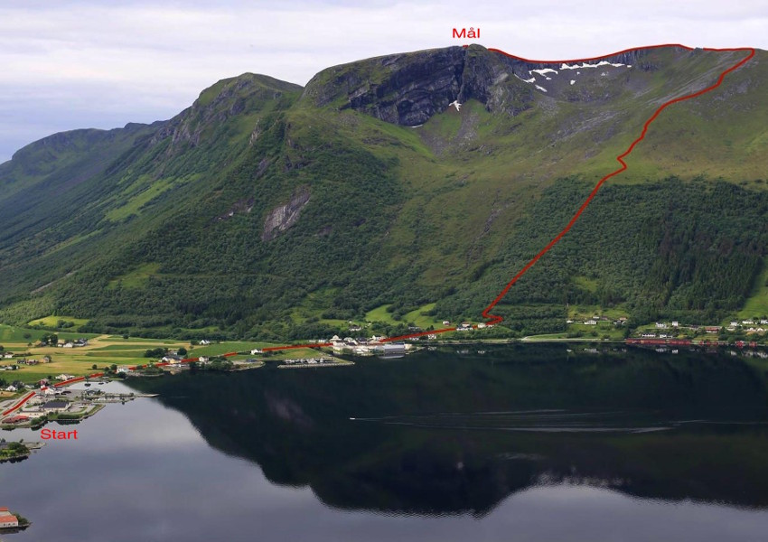
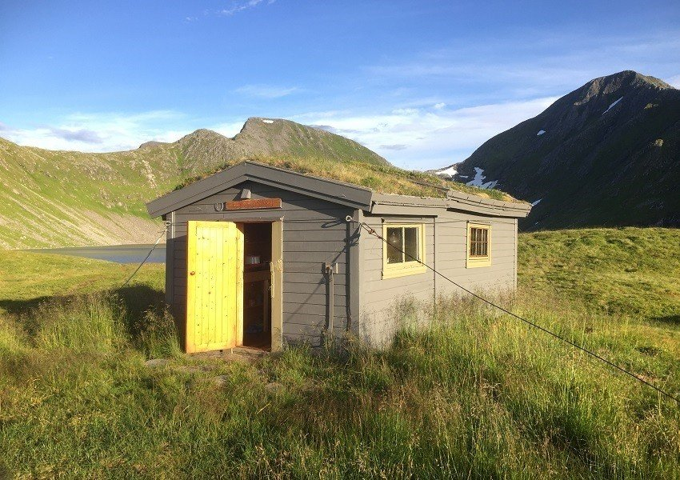
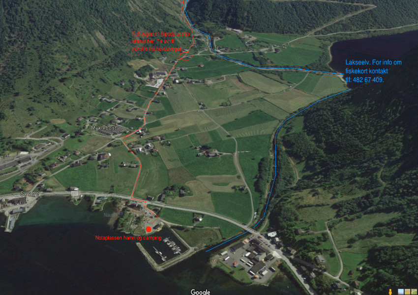

Notaplassen Hamnelag driftar i dag heilårshamna ”Notaplassen Hamn” som ligg inst i
Syvdsfjorden
omkransa av majestetiske fjell på kvar einaste side. Hamna er ei kombinert båt- og gjestehamn og
består av to flytebrygger a 57 meter lange. Totalt er det plass til 65 båtar.
Koordinatane til hamna er N 62.08775 E 005.72987
I dag har hamnelaget 39 medlemmer, og eige servicebygg/klubbhus. Servicebygget inneheld eit toalett tilrettelagt for bevegingshemma med eige dusjhjørne, kjøkken og møterom/selskapslokale med plass til 40 personar tilrettelagt for utleige. Hamnelaget driftar også ein bubilplass/campingplass på landområdet like ved hamna. Plassen har kapasitet til 10-15 bubilar/vogner. Campinggjestane har tilgong til toalett og dusj i serviceanlegget.
Fylgjande prisar gjeld per 01.02.2017:
| Størrelsar | Prisar |
|---|---|
| 2,5 meters-plass | 43.000 kr |
| 3 meters-plass | 53.500 kr |
| 4 meters-plass | 61.500 kr |
Prisar for desse er som følgjer:
| Beskrivelse | Prisar |
|---|---|
| Båt opp til 42 fot inkl. straum/vatn | 100 kr |
| Båt over 42 fot inkl. straum/vatn | 150 kr |
Bruk av båtopptrekk kr 150.- pr gong for ikkje-medlem av hamnelaget, betaling i kasse ved brygger eller til kontonr: 3910.30.81681
For kjøp av båtplass, kontakt Gunnar Eikrem eller Jan Eikrem
Tlf: 959 18 905/ 951 69 699
joeikrem@hotmail.com
100 kr u/strøm per døgn og 150 kr m/strøm per døgn. Betaling leggjast direkte i postkassa som er festa lett synleg ved inngongen til serviceanlegget.
For bruk av WC send sms til 959 18 905 eller 995 44 327 merka med ”kode WC” for å få tilsendt koda til nøkkelboksen.
Til arrangement av ulike slag stiller Notaplassen Hamnelag SA opp med eit sjarmerande selskaplokale
midt
i Syvde sentrum med vakker utsikt til alle kantar.
Kjøkkenet er utstyrt med servise til 37 stk
og opphaldsrommet
har god plass til det same antal gjestar.
Kontaktperson er Kristian Bentsen (tlf: 907 58 975)
| Beskrivelse | Prisar |
|---|---|
| Leige av heile huset, eksl. vask etter arrangementet | 600 kr |
| Leige av heile huset, inkl. vask etter arrangementet | 1200 kr |
Her er eit bilete som viser selskapslokalet
Vilkåra gjeld for leige av serviceanlegget ved Notaplassen hamn og dets tilhøyrande lausøyre. Vilkåra gjeld uavhengig om det er tale om leige med eller utan vask.
| NR. | Beskrivelse |
|---|---|
| 1 | Leigetakar er objektivt ansvarleg for all skade som blir påført leigeobjektet av han sjølv eller andre han gjev adgang til leigeobjektet. |
| 2 | Leigetakar pliktar å straks informere utleigeansvarlig dersom det oppstår skade. |
| 3 | Leigetakar pliktar å ta med alt tomgods og søppel etter endt bruk av lokalet. |
| 4 | Etter endt bruk skal stolar stablast med 4 stolar i høgda og setjast ytterst langs veggane i opphaldsrommet eller i yttergangen. |
| 5 | Brukte vaskefiller og golvmoppar skal vaskast og tilbakeleverast til serviceanlegget. |
| 6 | Brukt kjøkken- og serveringsutstyr skal reingjerast i oppvaskmaskina og setjast tilbake i kjøkkenskapet. |
| 7 | Leigetakar kan ikkje framleige leigeobjektet. |
Med dei høgreiste fjella som nokre plassar skyt mest rett ned i havet, og som den einaste bygda i Vanylven med 1000 meters toppar, er Syvde eit eldorado for sporty menneske. Skulle ein vere av det meir bedagelege slaget finst det også andre aktivitetar. At Syvde ligg midt i Vanylven kommune med kort avstand til alle dei andre bygdene rundt gjer at moglegheitene for utflukt er mange. Nedanfor kan du sjå nokon av dei opplevingane nærområdet til Notaplassen Hamn kan tilby.
Den etter kvart svært så kjente og populære besøksgarden er verdt eit besøk når ein først er i området. På Hakallegarden kan du verkeleg oppleve livet på landet og kome i nærkontakt med dyr av mange slag. Skulle du så verte lei av å klappe alpakka, ri på hest eller køyre Gråtass kan du nyte eit lite måltid og vakker utsikt frå den koselege kaféen på garden. For meir informasjon sjå Hakallegarden.no
Med fjell på kvar einaste side er Notaplassen Hamn eit godt utgangspunkt for fjellturar. Om ein berre skulle ynskje ein roleg skogstur eller om ein ynskjer å bestige 1000-meterstoppar så er Syvde staden for dette. Med svært godt oppmerka turløyper av ulik vanskegrad er også alt lagt til rette for at alle kan ferdast i naturen.
For dei sprekaste kan det kanskje være ei utfordring å bestige alle dei fem 1000-meterstoppane i Syvdsfjella på ein og samme dag? Høgenipa 1097, Myrkevasstinden 1131, Sandfjelltuva 1002, Blæja 1142, Lissjeblæja 1032 ligg alle slik til at dette er fullt mogeleg. Skulle ein vere eit større konkurransemenneske kan ein prøve seg i løypa til motbakkeløpet BLÅFELDEN RETT OPP. Med ei løypelengde på 4,38 km og høgaste punktet på 842 m.o.h. er dette ei løype som også den best trente vil slite i. Klarer du å slå Thorbjørn Thorsen Ludvigsen si knallsterke løyperekord på 35.48?
Skulle ein også ha fisking som ei interesse kan ein freiste fiskelukka i eit av dei mange fiskerike fjellvatna i Syvdsfjella. Lissjerøfsdalsvatnet og Blæjevatnet er her to perler kor du kan fiske fjellørret (ca storleik 150-500 gram) heilt gratis utan fiskekort!
For å kome til Blæjevatnet følg fjellvegen som går frå Syvde sentrum til Ripsdalssætra (markert i raudt på flyfotoet nedanfor). Denne turen tek ca. 10 minutt med bil eller 1 time til fots. Vegen har ein svært god standard og er fullt køyrbar med bubil. Når du kjem til Ripsdalssætra vil du sjå mange hytter og ein innegjerda parkeringsplass kor du kan parkere gratis. Frå parkeringsplassen og vidare mot ”Blæjevassbu” må du gå, men turstien er godt merka.
Turen frå Ripsdalssætra til Blæjevassbu tek ca. 1,5 time med roleg gange. Ved Blæjevatnet ligg det også ei hytte med fem overnattingsplassar som det er mogleg å leige. Ta kontakt med «Myklebust Sameige» v/ Leon Stranden (tlf: 970 37 137) for leige. For meir info om turstien til Blejævassbu sjå https://mrfylke.no/Morotur/Turar/Blaejevatnet-rute-53.
For å kome til Lissjerøfsdalsvatnet køyr forbi Ripsdalssætra og vidare til vegen sin ende. Der bilvegen sluttar kan du parkere gratis på ein innegjerda parkeringsplass. Får parkeringsplassen tek det ca. 30 minutt med roleg gange på ein fin tursti før ein kjem til den idylliske Lissjerøfsdalen og fiskevatnet der. Turstien er godt merka. For meir info om turstien sjå https://mrfylke.no/Morotur/Turar/Lisjeroefsdalen-rute-52.
For dei som heller vil fange villaks på fleire kilo ligg det ei fin lakseelv i umiddelbar nærhet til Notaplassen hamn og camping (markert i blått på flyfotoet). For kjøp av fiskekort kontakt Dagrun Molvik i «Myklebust elveeigarlag», tlf: 482 67 409. Fiskesesongen varer kvart år frå 15. juni til 31. juli.
Kvart år første helga i juni arrangerer ein stor dugnadsgjeng ei helg med mange aktivitetar for både små og store. Sentralt i helga står motbakkeløpet ”Blåfelden Rett Opp”. Med ei løypelengde på 4,38 km og høgaste punkt på 842 m.o.h. er dette eit løp der til og med den sprekaste vil slite. Opp gjennom åra har kjente navn som Oddbjørn Hjelmeset, Simen Østensen, Anders Aukland og Thomas Alsgaard deltatt. For meir info om løpet sjå syvdeil.no eller .
Kosterikjehelga byr sjølvsagt på meir enn berre motbakkeløp. Kunst og kultur er også viktige ingrediensar. Musikk, stand-up, gratis frukost, kyrkjekonsert, kunstutstilling og dans på laurdagskvelden er kvart år viktige ingrediensar.
Er du ute etter eit godt måltid til ein rimeleg pris der du samtidig kan nyte ei upåklageleg utsikt over vakker og storslått natur? Då er dette staden for deg. Restauranten er open kvar søndag frå 12-18 frå slutten av juni til ”over sommaren”. Á la carte og alle rettigheiter. Følg skilting mot Sørdalen frå sentrum av Syvde. Når du kjem til enden av Sørdalen følg fjellvegen til Øverberg og vidare skilting derifrå.
Syvde byr på ei rekke flotte sykkelruter, både langs flate landevegar og i ville skogsvegar. Nedanfor finn du eit utval av ruter med ulike vanskegrad. Alle rutene tek utgangspunkt i start og slutt ved Notaplassen og hamn og camping. Merk at det finst ei rekke andre sykkelruter i Syvde i tillegg til dei rutene som er opplista nedanfor.
Rute nr.1 (grønn)
Rute nr.2 (grønn/svart)
Du Notaplass, du Notaplass, ditt namn det syng i minne.
Frå vi var små til dagsens dag, vi gøymer deg der inne.
Ditt namn det har historisk klang
frå ættledar attende.
Men ingen har vel skrive sang
om deg og ditt – kan hende.
Før bøtte dei og barka sine garn og nøter her,
dei hardbalne forfedrane som hadde sjøen kjær.
For vegna måtte vølast når sesongen var forbi,
det var eit slit, det var eit strev og mang ei tungsam ri.
Men dugnadsånda den var sterk, samhaldet likeså.
Dei jamna grunn med spett og hakke, slo alt gras med ljå.
Og berg og bakkar vart til voll og leiken voks og voks,
no var det fotball som var inn, og ikkje ”slå på boks”.
På Notaplassen leika vi frå vi var ganske små,
men ekte, medfødd balltalent var sjeldan vi fekk sjå.
Han Bulen uti bakkane var den største, heilt enorm!
Så han vart fort kapteinen vår på fotballaget Storm.
Og like visst som tjeld og stare kom splinten hit kvar vår.
Dei kom med hest og kjerre, og dei kom med telt og skrål.
Og splintekongen Rosenberg var sjefen, huttetu!
Vi ungane vi bisna fælt: Er dei farlege skal tru?
Men størst av alt var tevlinga i idrett kvart eit år.
Frå alle skular kom dei hit til Notaplassen vår.
Her hoppa vi, vi kasta ball, her sprang vi og stafett,
Og Høystøyl, Nygard og han Thue såg til at alt vart rett.
Kvar 17. mai var det kamp, det gjekk med liv og lyst.
Som saueflokk sprang alle rundt for å snappe ballen fyst.
Og skorne det var beksaum, gut, med jernbeslåtte tå,
så leggbein rauk som oftast av, om du blei sparka på.
Han Breivik-Johan var ein av dei, uheldig med eit tramp,
som like før sitt bryllaup, og i beinhard fotballkamp,
fekk høgre leggen sparka av, men takk og pris for hell:
Hans kjære Alvhild visste råd, så det vart bryllup lell.
Så skjer det noko rart ein dag på Notaplassen vår:
Ein gut dreg opp frå lomma si ein kortstokk, der vi står.
Men kortspel det var syndig, ja, det visste alle mann.
Då kraup vi bak ein klungerbusk, og spelte kort i skam.
Det er no berre spel, sa vi, så ikkje ver så sur.
Men då slo sterke mødre til: Nei, det er ukultur!
Kva trur de om han Thue eller Tollås kjem og ser,
at de ligg der bak klungeren og spelar Svarte Per!
Ja, du Notaplass, du Notaplass, her opplevde vi så mangt.
Det verste var når ballen ut i stor-elva forsvant.
Han var så kjær, han var så dyr, ja endåtil av skinn,
vi våga nesten livet for å redde ballen inn.
Men naboen på sida hata fotballspelet, farr.
Han var kje`til å spøkje med, ein harding til ein kar.
Viss ballen tok ein snartur over gjerdet til hans bø,
då vart det månelyst ei stund, då fekk vi skikk`leg blø.
Når veka gjekk mot slutten og helga stunda til,
trakk ungdom ut i Vikja, til dans og anna dill.
Men vi som elska fotballen og Notaplassen vår,
vi droppa heller dansen, i sommarkvelden klår.
Men tida renn som elv mot os, og gutar blir til menn.
Og snart har dei familie, men kva manglar dei, min venn?
Ein båt, så klart, ein båt som ligg ved sjøen, fiskeklar,
for mor har alltid lita tid, og det har også far.
Det tente Krike-karane og Bentsen-Rolfen på.
-Her må vi noke gjere, ikkje berre stå og sjå!
Vi tek og lagar hamn, så klart, med molo attpåtil.
Dei sende ut innbyding: Kom og bli med den som vil!
Dei kastar blikk på Notaplassen, ingen nøter er å sjå.
Dei gamle barkekara er for lengst blitt fjerna nå.
Men unge fotballsparkarar, har dei og reist sin veg?
Dei har visst det, så rart å sjå kor ting kan endre seg!
Og gravarane dei tek fatt, dei grev i vilden sky.
Og holet veks frå dag til dag, vert hamn, ei stor og ny,
for jollar og for seglbåtar, for speedbåtar og for pram,
og utstikkarar fungerer som ein solid stovetram.
Ja du, min kjære Notaplass, du minnerike stad,
eg hugsar deg frå unge år, du gjorde meg så glad.
Her leika vi, her kjempa vi, her batt vi vennskapsband,
men no er ballen bytta ut med snøre og med stang.
Vi takkar her for kløkt og klokskap, gründerånd med stil.
Ein Notaplass er borte, ikkje død, har fått nytt liv!
Og krona oppå verket, prakfullt klubbhus, ja min sann,
kom sjå det, kjære kone, kom bruk det, gode mann.

{kind=link}
{kind=link}
{kind=link}
{kind=link}
{kind=link}
{kind=link}
{kind=link}
{kind=link}
{kind=link}
{kind=link}
{kind=link}